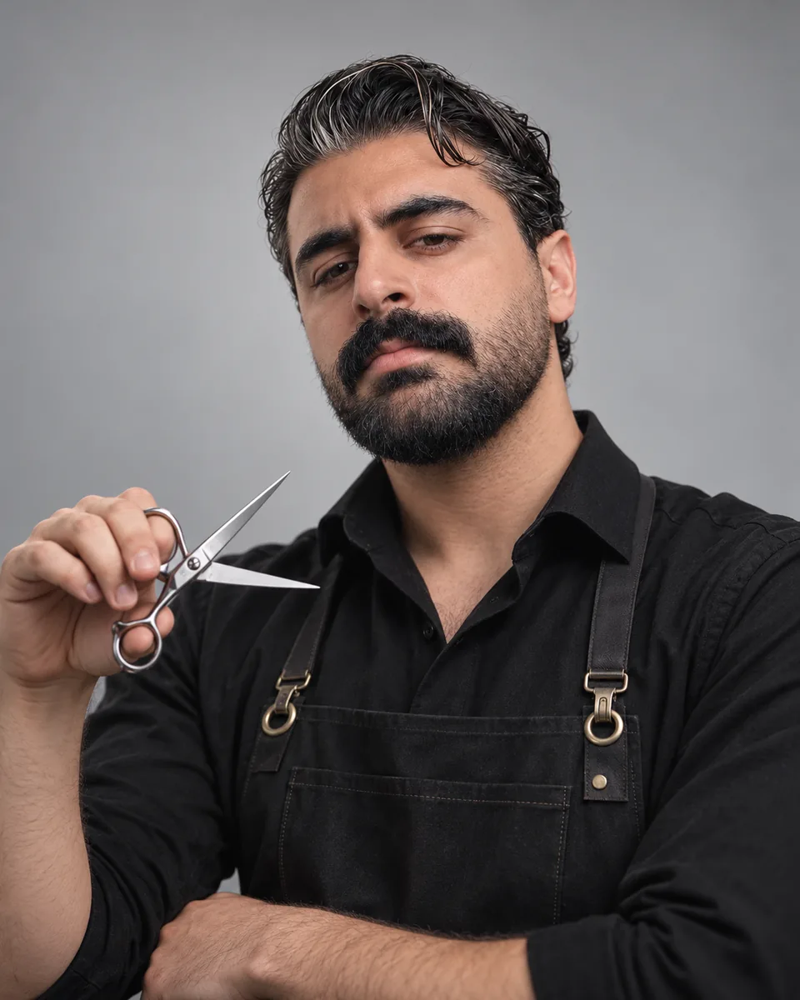

بیش از ۲۴ ساعت ماندهبازگشت هزینه
- لغو
- کل هزینه رزرو به اعتبار شما برمیگردد.
- جابهجایی
- یک بار مجاز است و حق بازگشت هزینه میماند.
ریوال سالن مردانه طاها در اردبیل است. هر نوبت زمان مشخص خودش را دارد؛ وقتی میرسید، صندلی و آرایشگرتان آمادهاند و لازم نیست منتظر بمانید.
